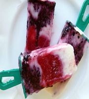
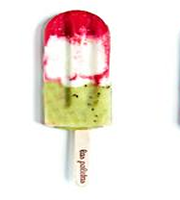
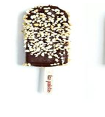

O Que são Paletas?
As paletas surgiram no México na década de 1930, na cidade de Tocumbo,
e, desde então, são uma das mais apreciadas sobremesas mexicanas. Até pouco tempo, quase
ninguém conhecia as paletas no Brasil, mas já caíram no gosto do brasileiro. Com quase o dobro
do tamanho de um picolé tradicional, elas têm, em média, 120 gramas e casaram perfeitamente
com nossas altas temperaturas.


